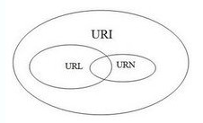

2016.12.19
创建时间：
2016/12/19 星期一 9:09
更新时间：
2016/12/19 星期一 22:12
作者：
王平安
sublime text3装emmet插件，设置tab键需要写入代码：
http://www.cnblogs.com/engeng/p/5957389.html
WebSocket的JavaScript例子
http://www.xyhtml5.com/websocket-javascript-example.html
URI URL 和 URN 区别
http://kb.cnblogs.com/page/90838/
URI：Uniform Resource Identifier，统一资源标识符； URL：Uniform Resource Locator，统一资源定位符； URN：Uniform Resource Name，统一资源名称。
JQuery ZTree
http://www.cnblogs.com/xing901022/p/4787625.html
http://www.jb51.net/article/89659.htm
webstrom ctrl+shift+f:批量查找 ctrl+shift+r:批量替换 其他快捷键
http://www.51xuediannao.com/qd63/index.php/page-2-109-1.html
让一个radio默认选中
checked="checked"
点击按钮，获取按钮的id
<button id="sx" onclick="sx(this)">获取</button>
<script> function sx(data){ alert(data.id); }</script>
js字符串截取函数slice()、substring()、substr()
https://my.oschina.net/u/1434139/blog/224271
jQuery 文档操作 - append() 方法
http://www.w3school.com.cn/jquery/manipulation_append.asp
jquery 获取一个iframe的title
https://zhidao.baidu.com/question/451780915.html
window.frames[
"iframe的name值"
].document.title;
删除iframe下除了 selectId的所有内容
$
(
'iframe'
).
not
(
$
(
selectId
)).
remove
();
//删除重复生成的iframe标签内容
a标签 href javascript:; javascript: void(0) 全写是a href="javascript:void(0);" 简单的说就是这个a标签点击链接失去作用了。
https://zhidao.baidu.com/question/1958183495871662340.html
完美实现bootstrap分页查询
http://www.jb51.net/article/76093.htm
取消a标签的默认行为 function(e){
e.preventDefault()
}
js如何判断字符串里是否包含另一字符串
http://bbs.csdn.net/topics/350070120
str.indexOf("ab") > -1
笔记：
延迟脚本：defer 表明脚本在执行时不会影响页面的构造，即脚本会被延迟到页面全部解析完毕后再运行。<script type="text/javascript" defer="defer" src="e.js"></script>